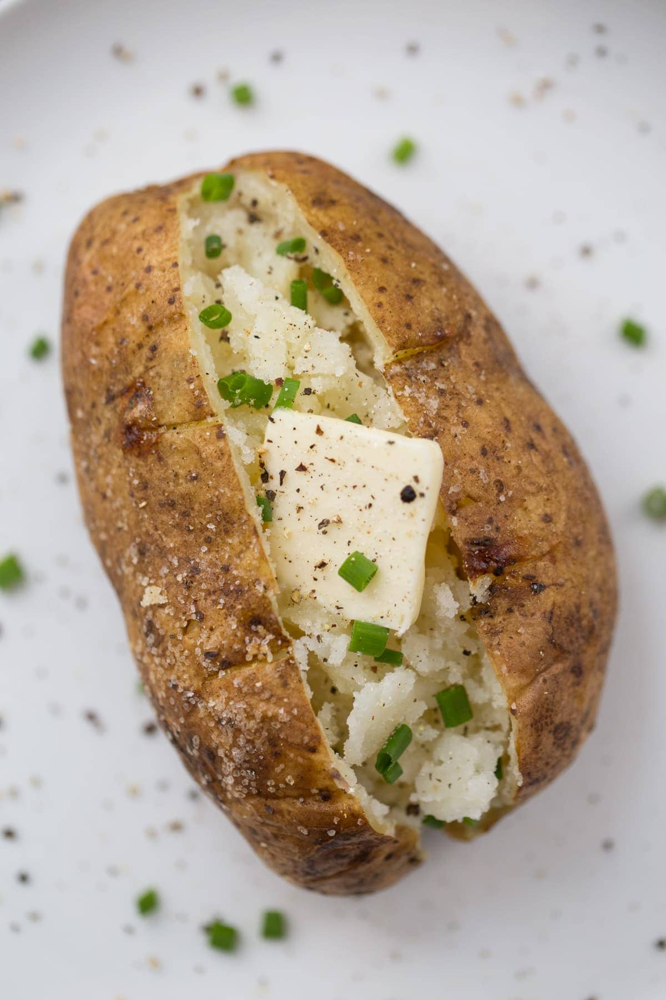

Potato

Description
This is a recipe for a tasty baked potato.
Ingredients
- russet potato
- olive oil
- salt
- pepper
- butter
- sour cream
- chives
Steps
- preheat the oven to 400˚F
- cover the potato in olive oil, salt, and pepper
- poke holes in the potato with a fork on both sides
- put potato on sheet pan and bake for 1 hour
- chop the chives
- remove, and make a deep slice along the top
- add butter, sour cream, chives, and enjoy